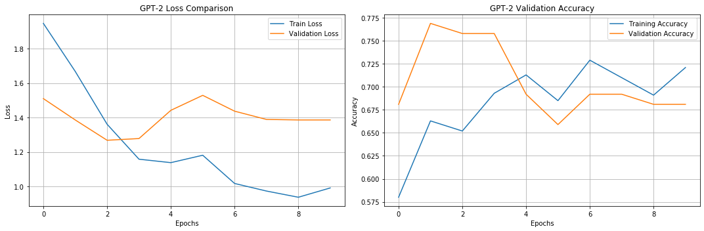
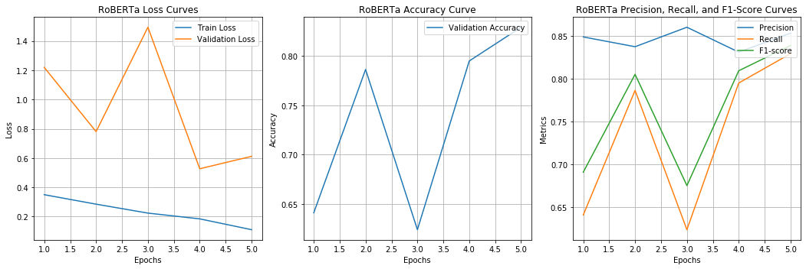
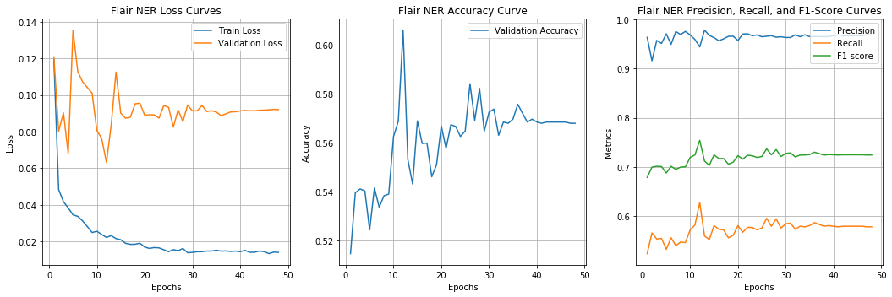
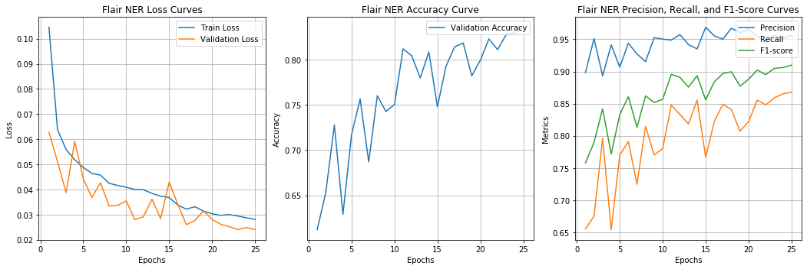
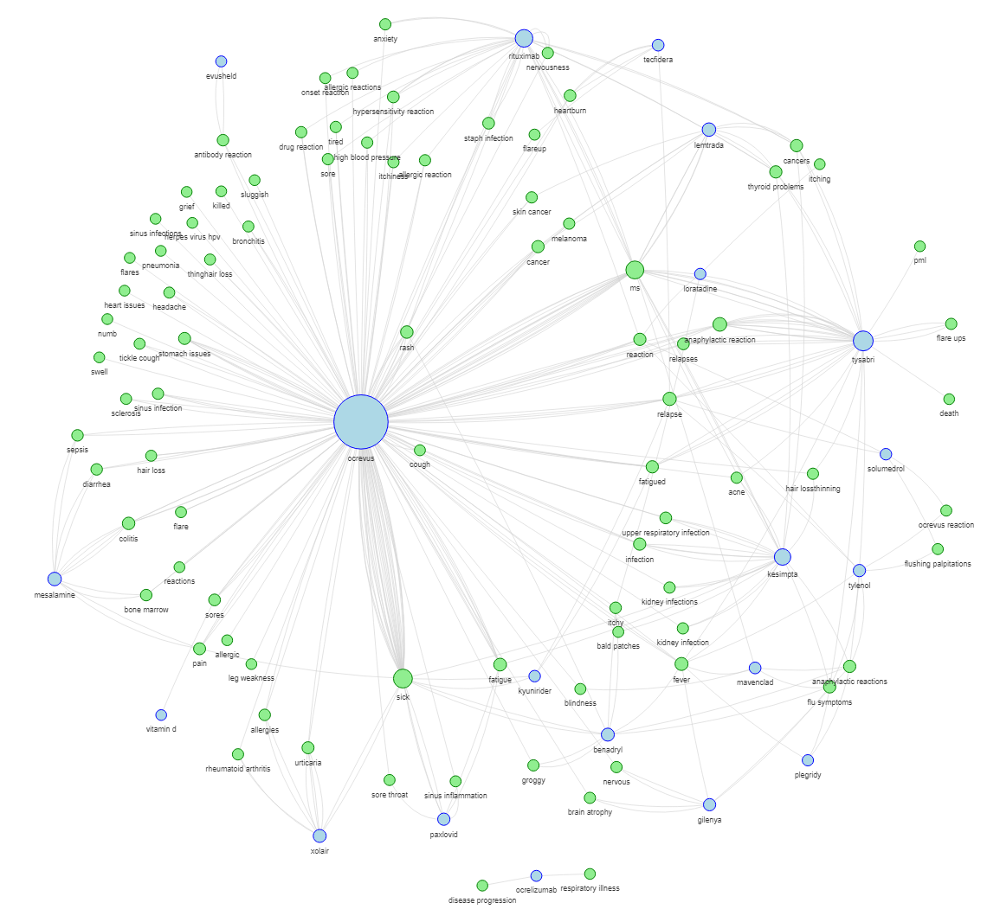

Named Entity Recognition (NER)
- Proper nouns and self-contained expressions like person names or products
- Single-token-based tags; better with clear token boundaries
The rapid expansion and ubiquity of social media platforms have generated vast amounts of user-generated content, offering unprecedented opportunities for the exploration of various research questions. In the realm of pharmacovigilance, investigating the degree to which adverse medication reactions are shared on social media beyond official reporting channels is of particular interest. This study aims to identify potential unacknowledged adverse drug reactions (ADRs) that may be absent from the FDA's Adverse Event Reporting System (FAERS) and determine whether significant outliers exist, while ascertaining the reliability of social media as a data source for pharmacovigilance.
To accomplish this, we will conduct a comparative analysis of the reporting rates of ADRs for the most prescribed medications in the United States, comparing data extracted from social media platforms with that from FAERS. Our measurable objectives include collecting ADR data from both sources, developing ADR extraction methods for social media, comparing social media ADR rates to FAERS baselines, and identifying unrecognized ADRs and significant outliers. Due to constraints, our analysis will be limited to a specific number of medications and will consider Reddit-specific limitations, such as the platform's younger demographic and longer comments. Additionally, we will account for differences in data collection methods and potential social media biases.
Our initial methodology encompasses research methods such as Reddit API utilization and FAERS data mining among a multitude of modelling methods. The intended audience for our findings consists of pharmaceutical, bioinformatics, and public health researchers. We will present our results through a comprehensive website that features visualizations, dashboards, and statistics, offering a detailed exploration of social media data mining for pharmacovigilance.
The initial data sources for this study are the FDA's Adverse Event Reporting System (FAERS) and Reddit, as they provide rich and diverse perspectives on adverse drug reactions (ADRs). FAERS is the standard source of information on ADRs reported to the FDA, with voluntary reporting from healthcare providers, patients, and pharmaceutical companies. Reddit, on the other hand, serves as a platform for communities to discuss various diseases and their treatments, offering detailed reports of side effects and potentially unreported ADRs. Utilizing the respective APIs for each data source allows for targeted searches of specific medications.
To efficiently extract Reddit data, we employed the Python Reddit API Wrapper (PRAW) and PushshiftAPI for targeted searches of comments mentioning specific medications. Challenges in Reddit data extraction include the length and grammar of comments, as well as the lack of context, which may hinder accurate interpretation and understanding of the full scope of ADRs. To address these challenges and ensure secure, scalable data storage and processing, we implemented a data management strategy using Jupyter and Google Cloud.
Sentiment analysis was conducted using the SentimentIntensityAnalyzer on Reddit comment content to determine the polarity scores and assign sentiment labels to DataFrame rows. Visualization of the results was achieved through Seaborn box plots and count plots. Basic topic modeling of negative Reddit comments was performed using Latent Dirichlet Allocation (LDA). Sentiment analysis is a valuable tool for identifying the underlying tone and sentiment of user-generated content, enabling us to uncover potential ADRs that may not be evident through traditional data mining techniques.
To further explore the data, we used the wordcloud library to visualize the most frequently used words per medication and colored these words based on sentiment analysis conducted with the TextBlob library. Moreover, we employed pandas to compare word frequencies across different sentiments, calculating frequency differences for positive and negative Reddit comments. These visualizations and comparisons provide insights into the prominence and distribution of sentiments related to specific medications, allowing for the identification of ADR trends and significant outliers within the data.
Recognizing the complexity of our problem, we decided to explore neural networks and deep learning methods under the guidance of our mentor. This required a transformation in our approach, which involved narrowing our scope from multiple medications to a single medication for building a robust model. Subsequently, we aimed to develop a pipeline that could be applied to other drugs.
The spaCy library is a powerful and widely-used natural language processing (NLP) library designed for efficient and high-performance text processing tasks. It offers pre-trained models that are developed on large and diverse datasets, ensuring versatility and applicability across various domains. One of the key strengths of spaCy is its fine-tunability, which enables us to achieve higher accuracy and better performance by adapting the pre-trained models to specific tasks or domains.
Prodigy, an annotation tool developed by the creators of spaCy, is designed to streamline and optimize the annotation process. Prodigy offers the ability to suggest new annotations based on patterns defined by the user, significantly reducing the time and effort required for manual annotation. Furthermore, the tool supports multiple users, allowing us to asynchronously annotate documents and collaborate more effectively.
Another advantage of Prodigy is its seamless integration with Google Cloud Platform (GCP), which enables us to scale our model training and deployment to handle large volumes of data. This integration ensures that our NLP pipeline can be easily adapted to meet the demands of various projects and workloads.
We redefined our key performance indicators to include Cohen's Kappa calculations, ensuring inter-rater reliability (IRR) between annotator pairs. IRR is essential for maintaining consistency and accuracy in annotation tasks, minimizing subjective bias and variability among annotators, and ultimately enhancing the quality of training data and overall model performance. Cohen's Kappa, a statistical measure that quantifies the level of agreement between two annotators while accounting for chance agreement, served as a valuable metric. Kappa values range from -1 to 1, with 1 indicating perfect agreement and values above 0.6 generally considered acceptable.
We chose Ocrevus (ocrelizumab), due to it being a recently approved multiple sclerosis (MS) medication considered "first-in-class" by the FDA.
At this point we also chose the Medical Dictionary for Regulatory Activities (MedDRA) terminology of side effects as a resource to use as patterns for Prodigy to enhance our annotation process.
NER:
During our testing phase, we realized that Ocrevus, despite being popular on Reddit, was not an ideal medication for our study due to its relatively low number of adverse drug reactions (ADRs). To provide the model with sufficient ADR data for training, we switched to studying Humira—a tumor necrosis factor (TNF) blocker known for reducing inflammation—observing that many individuals mentioned and complained about it while annotating Ocrevus comments.
To expedite the annotation process, we updated our patterns file by incorporating resources such as the ADR Lexicon V 1.1 from HLP Cedars-Sinai, SIDER, CHV, COSTART, and DIEGO_Lab for ADRs, and Drugs@FDA Data Files for drug names and active ingredients. Integrating these resources into our annotation process enabled us to increase annotation speed and improve the quality of our training data, thereby enhancing the overall performance of our model.
SpanCat (from previous SpanCat):
Another tool from the creators of spaCy and Prodigy, that had the potential to assist in our labeling of drugs and ADRs was Sense2Vec. Sense2Vec is a novel method for word sense disambiguation in neural word embeddings that utilizes supervised NLP labels instead of unsupervised clustering. Sense2Vec can disambiguate different parts of speech, sentiment, named entities, and syntactic roles of words, as well as demonstrate subjective and qualitative examples of disambiguated embeddings. We were able to add and utilize the new side effect vectors (which were the same as our new patterns) and pick single word ADRs out with regularity but struggled with multi-word phrases. We also attempted drug name vectors, but beyond very common drugs the results were less than satisfactory.
We also tested a GPT-2 model with a classifier for ADR identification. We found that it was "learning" the general format of the ChatGPT comments and started to label any shorter comment an ADR. Some were correctly classified, but overall, the model results were underwhelming.
Our final pipeline's structure begins to emerge during this testing phase, but we knew we needed to revamp and improve our models as well as find a way to not only label the drugs and ADRs but also link them together.
Our primary goal was to develop a reproducible pipeline that enables the analysis of not only Reddit comments but also extends to other social media platforms, such as Twitter and Facebook. This pipeline aims to be accessible and usable by academic, corporate, governmental, and public entities, allowing users to input any medication or adverse drug reaction of interest.
We employed the RoBERTa text classification model, a robustly optimized BERT pretraining approach built on the classic BERT model with longer and more focused pretraining and hyperparameter optimization. Utilizing the pre-trained RoBERTa base model from the HuggingFace transformers library, we developed custom PyTorch datasets and dataloaders for text preprocessing, which involved removing punctuation and links.
The comments were split into lists of strings and passed into the RoBERTa tokenizer item by item with overlap. The PyTorch classification head on top of the RoBERTa base model takes the pooled output and performs classification (ADR or no ADR) with dropout layers to prevent overfitting. We trained the model using 5 epochs with validation cycles, CrossEntropyLoss with class weights, the AdamW optimizer, and a linear learning rate scheduler.
To augment text classification training data, we employed OpenAI's GPT-3.5-turbo model for generating and classifying comments, addressing class imbalances and diversifying the training data to counteract biases and improve annotation efficiency.

For Named Entity Recognition (NER), we used Flair's SequenceTagger with stacked embeddings, including GloVe and Flair embeddings, providing different embeddings for the same word depending on its contextual use.
We incorporated word dropout and locked dropout to prevent overfitting, as well as a bidirectional Long Short-Term Memory (biLSTM) RNN to maintain short-term memory throughout the input sequence processing.
We trained the model using 5 epochs with validation cycles, CrossEntropyLoss with class weights, the AdamW optimizer, and a linear learning rate scheduler, employing the ViterbiLoss function.

Finally, we utilized a pre-trained spaCy dependency parser to extract and pair drug-ADR entities based on the output of the SequenceTagger. This parser links drugs and ADRs in the input text by finding the shortest dependency path between them, using the en_core_web_md model. The extracted and paired drug-ADR entities were saved in a CSV file for further analysis.
This pipeline offers a robust and flexible approach to extracting ADR phrases in relation to medications in text, making it an optimal method for our project's objectives. By combining advanced text classification, NER, and dependency parsing techniques, our pipeline can efficiently identify and extract relevant information from social media data for pharmacovigilance purposes.
During the final annotation phase, Taylor and Zach maintained a satisfactory Cohen's Kappa for text classification, while Jackson and Aidan initially achieved poor results. To address this issue, the team created a document outlining rules for both annotation methods. Subsequently, Jackson and Aidan significantly improved their Cohen's Kappa scores, achieving better consistency and accuracy in their annotations. The inter-rater reliability improvements were as follows:
To evaluate the RoBERTa model, we split the data into training, validation, and test sets. The model was trained using a custom PyTorch data loader and the RoBERTa tokenizer, which is a byte pair encoding (BPE) tokenizer. We ran the model for five epochs with a validation cycle after each epoch and calculated the training and validation accuracy and loss metrics at each step to observe convergence.
To augment text classification training data, we employed OpenAI's GPT-3.5-turbo model for generating and classifying comments, addressing class imbalances and diversifying the training data to counteract biases and improve annotation efficiency.
For Named Entity Recognition (NER), we used Flair's SequenceTagger with stacked embeddings, including GloVe and Flair embeddings, providing different embeddings for the same word depending on its contextual use. We incorporated word dropout and locked dropout to prevent overfitting, as well as a bidirectional Long Short-Term Memory (biLSTM) RNN to maintain short-term memory throughout the input sequence processing. We trained the model using 5 epochs with validation cycles, CrossEntropyLoss with class weights, the AdamW optimizer, and a linear learning rate scheduler, employing the ViterbiLoss function.
In these classification reports (left is with only GloVe embeddings; right is GloVe embeddings AND Flair embeddings), we see pretty stellar results with accuracies of 0.73 and 0.78 respectively. However, we needed a better annotation strategy between the two raters and better training metrics other than a classification report to understand whether our model was fitting correctly.
With regards to the changes needed for our annotations, one of the major questions we needed to ask ourselves was whether we should annotate all ADR-like words as ADR when they occur or only when they occur in an sentence using the word in the context of an ADR? To test this, we decided to do a round of annotations where we used the latter method, which we called the strict method, only marking a word as an ADR if it was mentioned in a sentence as an ADR.
The problem with the strict labeling style is that by being so selective with labeling ADRs in the text we were unable to provide enough examples of ADRs in the training data for the model to train on as a majority of the words that could be ADRs but were marked as not teaches the model not to label those words at all. In turn, the model was underfit, unable to learn from the training dataset at all. Along with this, the accuracy, precision, recall, and f1-score all plateaud showing no improvement.
To resolve some of these issues, we decided to combine the two annotated datasets, 1/2 strict 1/2 relaxed, hoping to provide a variety of examples in the training data to the model.
As you can see, our model was able to fit to the training data and showed improvement in all other metrics. Leading us to be confident in it's ability to label our data effectively.
For our dependency parser implementation, we have developed an interactive network graph that visually represents the relationships between drug and ADR entities extracted using the NER model. This graph, constructed by generating nodes for each unique drug and ADR entity and forming edges based on the dependency relations identified by the spaCy dependency parser, allows users to explore the connections between drugs and their associated ADRs, thereby providing an intuitive way to assess the quality of the entity extraction and dependency parsing processes. The interactive visualization enables users to click on individual nodes and view the corresponding text containing the extracted pairing, offering valuable insights into the context in which the entities were identified and the accuracy of the dependency parsing process.
This evaluation method offers several advantages for understanding the performance of the NER and dependency parsing models, such as facilitating a more intuitive understanding of the underlying structure of the extracted entities and their associations, and allowing users to explore specific instances of drug-ADR pairings to assess their validity based on the surrounding context. Furthermore, the integration of NER results and dependency parser output enables users to evaluate the overall effectiveness of the pipeline in identifying and connecting relevant entities.